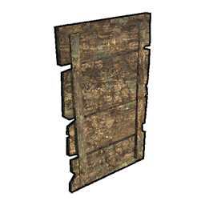

Piece list
All of the pieces currently in the game. This file is automatically generated from Sunkenland 0.1.50 using the SunkenDoc mod found on our GitHub.
Building List
| Piece | Building ID | Name | Description | Resources required |
|---|---|---|---|---|
D1_Gridiron |
1 | Simple Grill | Cooks raw foods for more nutrition. |
|
D3_Simple Purifier |
2 | Simple Purifier | Converts seawater into fresh water. |
|
F1_Stove |
3 | Stove | Can be used to cook more nutritious meals. |
|
G1_Fishnet |
4 | Fishnet | It automatically catches small fish. |
|
G2_Planter |
5 | Planter | Used for planting various types of fruits, vegetables, and shrubs. |
|
D2_Improved Gridiron |
6 | Improved Grill | Faster cooking, saving wood, more charcoal. |
|
D4_Advanced Purifier |
7 | Advanced Purifier | Pumps and distills seawater, accelerates purification. |
|
Fish Tank |
8 | Fish Tank | No translation found for '' in Item Description |
|
A1_Research Table |
9 | Research Table | Used to unlock more constructible items and base facilities. |
|
AirFillingStation |
10 | Air Filling Station | Manually refills your air tanks. |
|
B1_Furnace |
11 | Furnace | Can be used to convert ores into metal ingots. |
|
B2_Avil |
12 | Anvil | Used for crafting advanced metal weapons. |
|
Battery Charger |
13 | Battery Charger | Used to charge batteries. Requires power source. |
|
C1_Gun Workshop |
14 | Gun Workshop | Workshop used for crafting modern firearms. |
|
C2_Ammo Workshop |
15 | Ammo Workshop | Used for crafting modern ammunition. |
|
C3_Armor Workshop |
16 | Armor Workshop | Used for crafting modern helmets and bulletproof vests. |
|
C5 Small Generator |
17 | Small Generator | Provides power to various electrical devices. Consumes fuel. |
|
C8_Sawmill |
18 | Sawmill | Process regular wooden planks into refined wooden planks. |
|
C9 Decompose Table |
19 | Recycler | Drag unused items into it to dismantle and obtain partial raw materials. |
|
H_Biofuel Lab |
20 | Biofuel Lab | Used for crafting fuel. |
|
Large Generator |
21 | Large Generator | A larger generator that can connect more electrical devices and is more fuel-efficient. |
|
RepairStation |
149 | Repair Station | Can be used to repair equipment. |
|
Steel Furnace |
22 | Steel Furnace | Can be used to convert ores into metal ingots. |
|
A1_Wooden Foundation |
23 | Wooden Foundation | The foundation of base construction. |
|
A2_Metal Foundation |
24 | Metal Foundation | The foundation of base construction. |
|
B2_Reinforced Foundation |
25 | Reinforced Foundation | The foundation of base construction. |
|
E1_WoodenWall |
26 | Wooden Wall | Can only be built on foundations and floors. |
|
E2_WoodenWallWithDoorSlot |
27 | Wooden Wall With Door Slot | Can only be built on foundations and floors. |
|
E3_WoodenWallWithWindow |
28 | Wooden Wall With Window | Can only be built on foundations and floors. |
|
E4_Wooden Floor |
29 | Wooden Floor | Can only be built on pillars. |
|
E5_Wooden Column |
30 | Wooden Pillar | Used to support upper structures. |
|
E6_Wooden Roof |
31 | Wooden Roof | Can only be built on pillars. |
|
E7_WoodenDoor |
53 | Wooden Door | Can be attached to door frames. |
|
| E8_WoodenWindow  |
54 | Wooden Window | Can be attached to window frames. |
|
F1_Metal Wall |
32 | Metal Wall | Can only be built on foundations and floors. |
|
F2_Metal Wall WIth Door |
33 | Metal Wall With Door | Can only be built on foundations and floors. |
|
F3_Metal Wall With Window |
34 | Metal Wall With Window | Can only be built on foundations and floors. |
|
F4_Metal Floor |
35 | Metal Floor | Can only be built on pillars. |
|
F5_Metal Door |
46 | Metal Door | Can be attached to door frames. |
|
F6_Metal Window |
47 | Metal Window | Can be attached to window frames. |
|
G1_Glass Wall |
39 | Glass Wall | Can only be built on foundations and floors. |
|
G1_Reinforced Wall |
40 | Reinforced Wall | Can only be built on foundations and floors. |
|
G2_Reinforced Wall With Door |
41 | Reinforced Wall With Door | Can only be built on foundations and floors. |
|
G3_Reinforced Wall With Window |
42 | Reinforced Wall With Window | Can only be built on foundations and floors. |
|
G4_Reinforced Door |
48 | Reinforced Door | Can be attached to door frames. |
|
G5_Reinforced Window |
49 | Reinforced Window | Can be attached to window frames. |
|
H4_Metal Column |
43 | Metal Column | Used to support upper structures. |
|
Half Metal Stairs |
153 | Half Metal Stairs | Can be attached to foundations and floors. |
|
Half Wooden Stairs |
154 | Half Wooden Stairs | Can be attached to foundations and floors. |
|
J1_Wooden Stairs |
150 | Wooden Stairs | Can be attached to foundations and floors. |
|
J2_Wooden Ladder |
44 | Wooden Ladder | Can be attached to foundations and floors. |
|
J3_Metal Stairs |
151 | Metal Stairs | Can be attached to foundations and floors. |
|
J4_Metal Ledder |
45 | Metal Ladder | Can be attached to foundations and floors. |
|
K1_Wallpaper (Blue).png) |
50 | Wallpaper (Blue) | Can be built on any wall. |
|
K2_Metal Roof |
141 | Metal Roof | Can only be built on pillars. |
|
K2_Wallpaper (Green).png) |
51 | Wallpaper (Green) | Can be built on any wall. |
|
K3_Wallpaper (Yellow).png) |
52 | Wallpaper (Yellow) | Can be built on any wall. |
|
L1_Floor Tile (European).png) |
36 | Floor Tile (European) | Can be attached to foundations and floors. |
|
L2_Floor Tile (White Tiles).png) |
37 | Floor Tile (White Tiles) | Can be attached to foundations and floors. |
|
L3_Floor Tile (Wooden).png) |
38 | Floor Tile (Wooden) | Can be attached to foundations and floors. |
|
Wallpaper With Door |
142 | Wallpaper (Blue) | Can be built on any wall. |
|
Wallpaper With Door_1 |
143 | Wallpaper (Green) | Can be built on any wall. |
|
Wallpaper With Door_2 |
144 | Wallpaper (Yellow) | Can be built on any wall. |
|
Wallpaper With Window |
145 | Wallpaper (Blue) | Can be built on any wall. |
|
Wallpaper With Window_1 |
146 | Wallpaper (Green) | Can be built on any wall. |
|
Wallpaper With Window_2 |
147 | Wallpaper (Yellow) | Can be built on any wall. |
|
A1_Wooden Defensive Wall |
55 | Wooden Defensive Wall | Wooden defensive wall that can be used to enclose your base. |
|
A2_Wooden Gate |
56 | Wooden Gate | Wooden door that can be opened and closed. |
|
B1_Metal Defensive Wall |
57 | Metal Defensive Wall | Even sturdier defensive wall. |
|
B2_Metal Gate |
58 | Metal Gate | Even sturdier metal door that can be opened and closed. |
|
C1_Wooden Barricade |
59 | Wooden Barricade | Simple barricade that can obstruct invaders. |
|
C2_Barbed Wire |
60 | Barbed Wire | Simple barricade that can obstruct invaders. |
|
D1_Barricade |
61 | Barricade | Simple wooden cover that can be crouched behind for shooting. |
|
D2_Reinforced Barricade |
62 | Reinforced Barricade | Sturdy metal cover that can withstand gunfire, providing you with maximum protection. |
|
E1_Metal Armor Plate |
63 | Metal Armor Plate | Small armor plates that can be attached anywhere to reinforce and provide protection. |
|
E1_Tire Stack |
64 | Tire Stack | A pile of discarded tires for creating makeshift cover. |
|
F1_Heavy Machine Gun |
65 | Heavy Machine Gun | Stationary heavy weapon that can rotate. Uses large caliber ammunition. |
|
| G1_Siren |
66 | Siren | A high pitch alarm system. |
|
| G2_Detector |
67 | Detector | Activates nearby alarms when enemies enter its range. |
|
Wall Spike |
68 | Wall Spikes | Mounted on walls and damages enemies upon contact. |
|
Wall Trap |
69 | Wall Trap | Mounted on walls, nearby enemies trigger dropping heavy objects. |
|
A0_Simple Bed |
70 | Simple Bed | Sleep to pass the night and restore stamina. Be cautious not to disrupt your sleep schedule. |
|
A1Marker Flag |
71 | Marker Flag | Place it to mark a location. |
|
B1_Wooden Chest |
72 | Wooden Chest | Used for storing items. |
|
B2_Metal Chest |
73 | Metal Chest | Used for storing items. |
|
B3_Ammo Box |
74 | Ammo Box | Used for storing items. |
|
B4_Food Container |
75 | Food Container | Used for storing items. |
|
B5_ToolBox |
76 | Tool Box | Used for storing items. |
|
B6_Metal Barrel |
77 | Metal Barrel | Used for storing items. |
|
B7_Fridge |
78 | Fridge | Used for storing items. |
|
Blue Patterned Chair |
79 | Blue Patterned Chair | Decorative Furniture |
|
Concave Cabinet |
80 | Concave Cabinet | Used for storing items. |
|
D1_Wooden Shelving |
81 | Wooden Shelving | Used for storing wooden planks. |
|
D3_Metal Shelving |
82 | Metal Shelving | Used for storing scrap metal. |
|
Desk |
83 | Desk | Decorative Furniture |
|
Humble Chair |
84 | Humble Chair | Decorative Furniture |
|
Humble Sofa |
85 | Humble Sofa | Decorative Furniture |
|
Humble Table |
86 | Humble Table | Decorative Furniture |
|
Plaid Couch |
87 | Plaid Couch | Decorative Furniture |
|
Red Cloth Sofa |
88 | Red Cloth Sofa | Decorative Furniture |
|
Simple Cabinet |
89 | Simple Cabinet | Used for storing items. |
|
Small Bench |
90 | Small Bench | Decorative Furniture |
|
Solid Wood Cabinet |
91 | Solid Wood Cabinet | Used for storing items. |
|
Square Table |
92 | Square Table | Decorative Furniture |
|
Wooden Closet |
93 | Wooden Closet | Used for storing items. |
|
Armchair |
94 | Armchair | Decorative Furniture |
|
Backrest Chair |
95 | Backrest Chair | Decorative Furniture |
|
Black Leather Chair |
96 | Black Leather Chair | Decorative Furniture |
|
Black Leather Couch |
97 | Black Leather Couch | Decorative Furniture |
|
Collection Cabinet |
98 | Collection Cabinet | Used for storing items. |
|
Counter |
99 | Counter | Decorative Furniture |
|
Double Door Wardrobe |
100 | Double Door Wardrobe | Used for storing items. |
|
Double Shelf |
101 | Double Shelf | Decorative Furniture |
|
Fireplace |
102 | Fireplace | Decorative Furniture |
|
Leather Suitcase |
155 | Leather Suitcase | Used for storing items. |
|
Log Desk |
103 | Log Desk | Decorative Furniture |
|
Makeup Table |
104 | Makeup Table | Decorative Furniture |
|
Round Glass Table |
105 | Round Glass Table | Decorative Furniture |
|
Round Table |
106 | Round Table | Decorative Furniture |
|
Single bed |
107 | Single bed | Sleep to pass the night and restore stamina. Be cautious not to disrupt your sleep schedule. |
|
Chaise Leather Couch |
108 | Chaise Leather Couch | Decorative Furniture |
|
Double |
109 | Double Bed | Sleep to pass the night and restore stamina. Be cautious not to disrupt your sleep schedule. |
|
European Leather Chair |
110 | European Leather Chair | Decorative Furniture |
|
French Sofa |
111 | French Sofa | Decorative Furniture |
|
Green Leather Couch |
112 | Green Leather Couch | Decorative Furniture |
|
Hanging Clocks |
113 | Hanging Clock | Decorative Furniture |
|
Premium Fireplace |
114 | Premium Fireplace | Decorative Furniture |
|
Safe |
115 | Safe | Used for storing items. |
|
Single Leather Couch |
116 | Single Leather Couch | Decorative Furniture |
|
TV |
117 | TV | Decorative Furniture |
|
Vintage Leather Couch |
118 | Vintage Leather Couch | Decorative Furniture |
|
A1_Paddle Boat |
119 | Paddle Boat | A simple boat powered by oars. |
|
B_Sail Boat |
120 | Wooden Sailboat | A wooden sailboat that can accommodate 4 people. It has storage space. |
|
C_Motor Boat |
121 | Motor Boat | A small gasoline-powered boat that can carry 2 people. It's faster and has storage space. |
|
D_JetSki |
122 | Jetski | Single-person high-speed jet ski. No storage space. |
|
E_Jetstream Bowrider |
123 | Jetstream Bowrider | A wooden sailboat that can accommodate 4 people. It has storage space. |
|
F_Marine Fast Boat |
124 | Marine Fast Boat | A wooden sailboat that can accommodate 4 people. It has storage space. |
|
G_Helicopter |
125 | Light Helicopter | A small helicopter that can carry two people. It has storage space. It greatly challenges one's flying skills. |
|
A_Standing Torch |
126 | Standing Torch | Provide a small scope of illumination. |
|
B_Fire Bowl |
127 | Fire Bowl | The firelight is brighter and has a wider range. |
|
C_Hanging Lantern |
128 | Hanging Lantern | It can be hung from the ceiling. |
|
Campfire |
129 | Bonfire | It can illuminate a wide area. Wood needs to be added. Suitable for lighting up large outdoor spaces. |
|
D1_Buoy |
130 | Buoy | Floating flags that can be placed on the sea. |
|
D2_Floor Lamp |
131 | Floor Lamp | Lighting devices. Require connection to a generator. |
|
D3_Ceiling Light |
132 | Ceiling Light | Lighting devices. Require connection to a generator. |
|
Searchlight |
133 | Searchlight | Direction-controllable searchlight. Requires connection to a generator. |
|
Table Lamp |
134 | Table Lamp | Lighting devices. Require connection to a generator. |
|
Crystal Chandelier |
135 | Crystal Chandelier | Lighting devices. Require connection to a generator. |
|
European Chandelier |
136 | European Chandelier | Lighting devices. Require connection to a generator. |
|
Modern Floor Lamp |
137 | Modern Floor Lamp | Lighting devices. Require connection to a generator. |
|
Modern Garden Lamp |
138 | Modern Garden Lamp | Lighting devices. Require connection to a generator. |
|
Modern Lamp Post |
139 | Modern Lamp Post | Lighting devices. Require connection to a generator. |
|
Modern Wall Lamp |
140 | Modern Wall Lamp | Lighting devices. Require connection to a generator. |
|